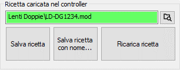

La modifica di una ricetta può essere effettuata tramite gli strumenti messi a disposizione da ABB, Flex Pendant o Robot Studio. Come indicato nel primo paragrafo, l’unico modulo modificabile per la differenziazione di una ricetta è il modulo RECIPE! Pertanto, per effettuare modifiche, è necessario innanzi tutto caricare la ricetta di interesse nel controller. Per rendere permanenti le modifiche effettuate si possono utilizzare i pulsanti Salva ricetta e Salva ricetta con nome…: il primo effettua il download dal robot della ricetta corrente e la sua sovrascrittura nell’archivio; il secondo crea invece una nuova ricetta a partire dalle modifiche effettuate. La ricetta originale risulterà invariata.
